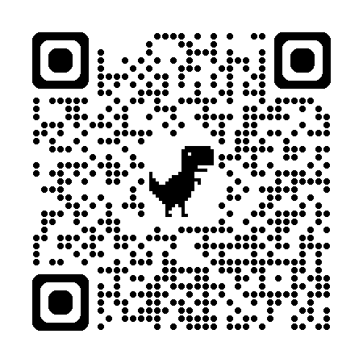

늘 하던 구현·테스트·수정을 AI가 스스로 반복하고 검증하게 만든 것.
기록하고 검증해 다음 입력으로 되돌리고, 멈출 수 있게 만드는 것.
핵심은 두 가지. 확실한 검증, 그리고 잘 멈추는 구조.
요구사항을 듣고 모호한 부분을 줄인다.
작게 만들고 실제 코드에 붙인다.
실행 결과로 확인한다.
실패한 지점을 다음 입력으로 바꾼다.
다른 관점으로 완료 주장을 검증한다.
AI가 와도 사라지지 않는다. 자동화될 뿐.
하던 일은 그대로다. AI 시스템이 이 과정을 스스로 반복할 뿐이다.
사람처럼 추론하는 기계를 만들자는 질문이 시작된다.
if A then B 같은 규칙을 많이 쌓는다.
특정 분야 지식을 룰과 데이터로 운영한다.
데이터에서 패턴을 학습한다.
답을 그럴듯하게 생성하지만 완료 검증은 별개다.
방식은 바뀌었지만 “어떻게 믿을 것인가”는 계속 남았다.
왜 그런 답인지 추적하기 쉽다. 현실을 다 규칙으로 쓰긴 어렵다.
강점: 설명 가능성
약점: 생성력과 유연성
빠르게 만들어낸다. 맞는지는 따로 확인해야 한다.
강점: 생성력과 범용성
약점: 자기 검증의 불안정성
에이전트에게 일을 맡기는 작은 시스템을 설계한다.
일을 맡기고, 확인하고, 기록하는 구조를 짜는 일. Boris, Peter Steinberger, Addy Osmani가 말하는 루프다.
내가 묻고 읽고 다시 지시한다. 판단이 사람 머릿속에 있다.
단위: 한 번의 프롬프트
위험: 매번 맥락 재설명
목표·검증·기록·정지를 설계한다. 사람은 루프의 설계자가 된다.
단위: 검증 가능한 반복
위험: 잘못 설계하면 자동화된 오류
매일, 실패 후, PR마다 같은 조건으로 루프를 시작한다.
작업마다 공간을 나눠, 서로 덮어쓰지 않게 한다.
프로젝트 규칙, 빌드 방법, 금지된 선택을 매번 다시 설명하지 않는다.
GitHub, Linear, Slack, DB처럼 실제 업무 도구와 붙는다.
만든 사람과 검사하는 사람을 나눠 자기 합리화를 줄인다.
대화 밖에 상태를 남겨 다음 실행이 이어받게 한다.
무엇을 할지 정한다.
에이전트에 넘긴다.
검증한다.
기록하고 다음을 정한다.
검증 결과가 다음 입력으로 돌아간다는 점이 핵심.
목표는 모호하고, 검증자도 정지 조건도 없다.
증상: 토큰만 쓰고 품질은 흔들림
목표·검증·기록·정지가 있다. 다음 입력이 검증 결과에서 나온다.
증상: 실패해도 어디서 왜 실패했는지 남음
묻고·만들고·검증하고·고치기를 반복하는 구조다.
검증 결과가 다음 입력이 되고, 모든 과정을 기록하며, 스스로 멈춘다.
모호함을 줄인다.
목표를 고정한다.
만들고 검증한다.
검증을 다음에 반영한다.
핵심은 데이터 흐름. 검증 결과가 다음 입력이 된다.
만들고 검증하고 멈추기를 반복한다.
통과한 테스트
검증 과정
이 정도면 멈춤
계속 만들고, 충분히 좋아졌는지 확인한다.
통과하거나, 오래 걸리거나, 제자리걸음이면 멈춘다.
기계적으로, 의미로, 여러 관점으로 확인한다.
모든 과정을 저장해 언제든 되짚어본다.
목표를 채웠는지 확인해 멈출지 정한다.
“프롬프트하는 사람을 그만두고, 그 일을 하는 루프를 설계하라.”
목적을 정하면 완료까지 AI가 반복한다.
만든 에이전트는 자기 일을 잘 못 본다. 다른 에이전트가 검증한다.
어제 멈춘 곳에서 오늘 이어간다.
앞의 여섯 장치(자동 실행·격리·스킬·연결·검증·기억)가 이 정의를 이루는 부품이다.
무엇을 완료라고 부를지 먼저 정한다.
파일, DB, 이벤트 로그에 남긴다.
만든 모델이 혼자 완료 선언하지 않게 한다.
통과, 실패, timeout, 회귀, 반복 정체 조건이 있어야 한다.
루프의 품질은 무엇을 근거로 다음 결정을 했느냐에서 나온다.
하고 싶은 일을 한 줄로 적는다.
여러 에이전트가 나눠 만든다.
N명이 10점 만점으로 채점한다.
넘으면 멈춘다.
검증은 리뷰 점수, 정지 조건은 기준 점수. 루프 엔지니어링의 가장 쉬운 형태다.
방금은 리뷰 점수로 멈췄죠. 그 점수는 무엇을 근거로 믿을 수 있을까요?
가장 믿을 수 있는 건 규칙으로 딱 떨어지는 “결정론적 검증”.
정답과 맞는지만 본다. 과정은 모른다.
횟수·길이만 본다. 질은 못 본다.
정답 규칙과 맞춘다. 정확하지만 분야가 좁다.
넓게 쓰지만 검증이 AI라 한계가 있다.
규칙에 가까울수록 정확하고, AI에 가까울수록 넓게 쓴다.
일을 시켜 결과를 만든다. 과정이 남는다.
만든 쪽과 검증하는 쪽을 나눈다.
틀린 곳을 찾아 스킬을 다시 쓴다.
사람이 확인한 뒤 반영한다.
앞에서 본 루프와 같은 구조. 재학습 없이 한 번에 몇 천 원.
과정을 읽고 개선점을 찾는다. 거의 모든 분야에 쓰지만, 검증이 AI라 한계가 있다.
범위: 넓음 · 검증: AI
규칙과 단계별로 대조한다. 우회는 어렵지만, 규칙을 정의할 수 있는 분야에서만 된다.
범위: 좁음 · 검증: 규칙
둘은 보완 관계. 핵심은 검증을 어디까지 규칙으로 만드느냐다.
사람이 하던 반복 판단을 시스템 경계 안으로 옮긴 것이다.
명세, 실행, 평가, 진화, 상태 재구성, 정지 조건을 구현한다.
기록하고 검증하고 멈출 수 있게 돌리는 것.
랄프톤 1위 개발자가 알려주는 실전 하네스 엔지니어링 A to Z
(with Claude Code, Codex)

*본 자료는 세미나 수강생분들에게만 제공되는 강의 자료로, 저작권은 패스트캠퍼스와 작성자에게 있습니다. 무단 공유·게시 시 저작권법 위반에 해당할 수 있습니다.
*본 자료는 세미나 수강생분들에게만 제공되는 강의 자료로, 저작권은 패스트캠퍼스와 작성자에게 있으므로 본 저작물을 무단으로 공유 및 게시할 시 저작권법 위반에 해당할 수 있습니다.
➡️ 랄프톤 1위 개발자가 알려주는 실전 하네스 엔지니어링 A to Z (with. Claude Code, Codex)